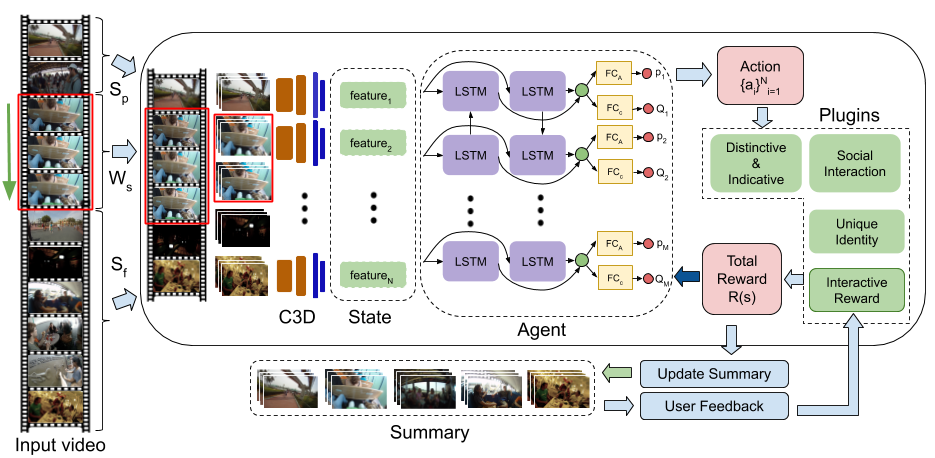
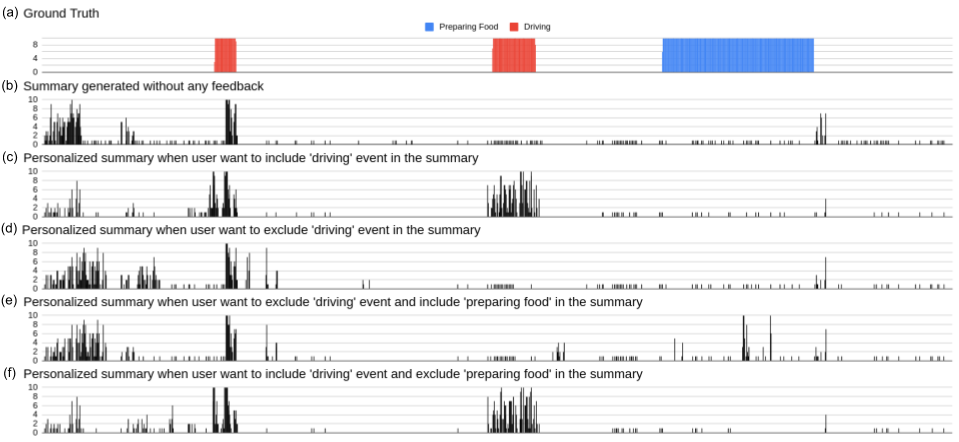

Generating Personalized Summaries of Day Long Egocentric Videos
Abstract
The popularity of egocentric cameras and their always-on nature has lead to the abundance of day-long first-person videos. The presence of extreme shake and highly redundant nature of these videos make them difficult to watch from beginning to end and requiring summarization tools for their efficient consumption. However, traditional summarization techniques developed for static surveillance videos, or highly curated sports videos and movies are, either, not suitable or simply do not scale for such hours long videos in the wild. On the other hand, specialized summarization techniques developed for egocentric videos limit their focus to important objects and people. In this paper, we present a novel unsupervised reinforcement learning framework to summarize egocentric videos both in terms of length as well as the content. The proposed framework facilitates to incorporate various types of prior preferences such as faces, places, or scene diversity as well as interactive user choice in terms of including or excluding the particular type of content. Our approach can also be adapted to generate summaries of various lengths making it possible to view even 1-minute summaries of one’s entire day. When using the facial saliency-based reward, we show that our approach generates summaries focusing on social interactions, similar to the current state-of-the-art (SOTA). Quantitative comparison on the benchmark Disney dataset shows that our method achieves significant improvement in Relaxed F-Score (RFS) ( 29.60 compared to 19.21 from SOTA) and BLEU score ( 11.55 vs. 10.64 from SOTA). Finally, we show that our technique can be applied for summarizing traditional, short, hand-held videos as well, where we improve the SOTA F-score on benchmark SumMe and TVSum datasets from 41.4 to 46.40 and 57.6 to 58.3 respectively.
Architecture

Code
The software implementation of this project can be found on GitHub repository. The implementation is based on PyTorch library.
Supplementary Material
The supplementary material can be found here
Datasets
The Feature extraction process and feature loading from h5py files is explained in the ReadMe.
Video Demonstration of Interactive Summarization
The table below demonstrates few demos of generated summaries under different feedbacks.
| Events | Video | Dataset | Summary without feedback | Feedback1 | Feedback2 | Remarks |
|---|---|---|---|---|---|---|
| Dinner | Alin Day 1 | Disney |
No Feedback
|
Dinner Included
|
Dinner Exlcuded
|
The video demonstrations are corresponding to Fig. 7 in main manuscript |
| Driving | P01 | UTE |
No Feedback
|
Driving Included
|
Driving Exlcuded
|
The video demonstrations are corresponding to Fig. 9(b,c, and d) in supplementary material |
| Preparing food & Driving | P01 | UTE |
No feedback
|
Driving exlcuded and Prep. food included
|
Driving included and Prep. food excluded
|
The video demonstrations are corresponding to Fig. 9(b,e, and f) in supplementary material |
We have also created the GUI for interactive video summarization. The video demonstrates the use of GUI for taking positive and negative feedbacks.
Video Demonstration of Video summarization using various plugins
More Visualization
The figure demonstrates the visualization of the interactive summarization of the 'P01’ video sequence of the UTE dataset. Each bar represents 10 seconds of time interval. (a)-(e) shows different summaries when two events namely 'preparing food’ and 'driving’ are included/excluded in the summary. We can observe that (c) has more driving sub-shots compared to (b), whereas in (d) the bars in the driving sub-shots are reduced considerably. Similarly, for (e) we get peaks in the 'preparing food’ area whereas the bars in the driving area are reduced. The opposite is seen in the (d).

User Study
The table shows the Likert score of 1 (Extremely dissatisfied) to 5 (Extremely satisfied) given by the participants when specific events are included or excluded in the summary with user comments on the personalized summary. S0X-SY represents subject ‘X’ in scenario ‘Y’. It is observed that sometimes the user sees the excluded part in the personalized summary. This is because the interactive reward personalized the summary but at the same time distinctiveness-indicative reward that tries to maintain the global context. This can be handled by fine-tuning the weights of A and B discussed in interactive reward.
Related Publications
- Anuj Rathore*, Pravin Nagar* , Chetan Arora, and C. V. Jawahar. "Generating 1 Minute Summaries of Day Long Egocentric Videos" ACMMM 2019.
Bibtex
If you use this work, please cite these works :
@article{nagar2021generating,
title={Generating Personalized Summaries of Day Long Egocentric Videos},
author={Nagar, Pravin and Rathore, Anuj and Jawahar, CV and Arora, Chetan},
journal={IEEE Transactions on Pattern Analysis and Machine Intelligence},
year={2021},
publisher={IEEE}}
@inproceedings{rathore2019generating,
title={Generating 1 Minute Summaries of Day Long Egocentric Videos},
author={Rathore, Anuj and Nagar, Pravin and Arora, Chetan and Jawahar, CV},
booktitle={Proceedings of the 27th ACM International Conference on Multimedia},
pages={2305--2313},
year={2019}}